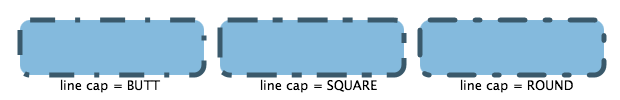

- All Implemented Interfaces:
Styleable,EventTarget
- Direct Known Subclasses:
Arc,Circle,CubicCurve,Ellipse,Line,Path,Polygon,Polyline,QuadCurve,Rectangle,SVGPath,Text
Shape class provides definitions of common properties for
objects that represent some form of geometric shape. These properties
include:
- The
Paintto be applied to the fillable interior of the shape (seesetFill). - The
Paintto be applied to stroke the outline of the shape (seesetStroke). - The decorative properties of the stroke, including:
- The width of the border stroke.
- Whether the border is drawn as an exterior padding to the edges
of the shape, as an interior edging that follows the inside of the border,
or as a wide path that follows along the border straddling it equally
both inside and outside (see
StrokeType). - Decoration styles for the joins between path segments and the unclosed ends of paths.
- Dashing attributes.
An application should not extend the Shape class directly. Doing so may lead to an UnsupportedOperationException being thrown.
Interaction with coordinate systems
Most nodes tend to have only integer translations applied to them and quite often they are defined using integer coordinates as well. For this common case, fills of shapes with straight line edges tend to be crisp since they line up with the cracks between pixels that fall on integer device coordinates and thus tend to naturally cover entire pixels.On the other hand, stroking those same shapes can often lead to fuzzy outlines because the default stroking attributes specify both that the default stroke width is 1.0 coordinates which often maps to exactly 1 device pixel and also that the stroke should straddle the border of the shape, falling half on either side of the border. Since the borders in many common shapes tend to fall directly on integer coordinates and those integer coordinates often map precisely to integer device locations, the borders tend to result in 50% coverage over the pixel rows and columns on either side of the border of the shape rather than 100% coverage on one or the other. Thus, fills may typically be crisp, but strokes are often fuzzy.
Two common solutions to avoid these fuzzy outlines are to use wider
strokes that cover more pixels completely - typically a stroke width of
2.0 will achieve this if there are no scale transforms in effect - or
to specify either the StrokeType.INSIDE or StrokeType.OUTSIDE
stroke styles - which will bias the default single unit stroke onto one
of the full pixel rows or columns just inside or outside the border of
the shape.
- Since:
- JavaFX 2.0
-
Property Summary
PropertiesTypePropertyDescriptionfinal ObjectProperty<Paint>Defines parameters to fill the interior of anShapeusing the settings of thePaintcontext.final BooleanPropertyDefines whether antialiasing hints are used or not for thisShape.final DoublePropertyDefines a distance specified in user coordinates that represents an offset into the dashing pattern.final ObjectProperty<StrokeLineCap>The end cap style of thisShapeas one of the following values that define possible end cap styles:StrokeLineCap.BUTT,StrokeLineCap.ROUND, andStrokeLineCap.SQUARE.final ObjectProperty<StrokeLineJoin>Defines the decoration applied where path segments meet.final DoublePropertyDefines the limit for theStrokeLineJoin.MITERline join style.final ObjectProperty<Paint>Defines parameters of a stroke that is drawn around the outline of aShapeusing the settings of the specifiedPaint.final ObjectProperty<StrokeType>Defines the direction (inside, centered, or outside) that the strokeWidth is applied to the boundary of the shape.final DoublePropertyDefines a square pen line width.Properties declared in class javafx.scene.Node
accessibleHelp, accessibleRoleDescription, accessibleRole, accessibleText, blendMode, boundsInLocal, boundsInParent, cacheHint, cache, clip, cursor, depthTest, disabled, disable, effectiveNodeOrientation, effect, eventDispatcher, focused, focusTraversable, focusVisible, focusWithin, hover, id, inputMethodRequests, layoutBounds, layoutX, layoutY, localToParentTransform, localToSceneTransform, managed, mouseTransparent, nodeOrientation, onContextMenuRequested, onDragDetected, onDragDone, onDragDropped, onDragEntered, onDragExited, onDragOver, onInputMethodTextChanged, onKeyPressed, onKeyReleased, onKeyTyped, onMouseClicked, onMouseDragEntered, onMouseDragExited, onMouseDragged, onMouseDragOver, onMouseDragReleased, onMouseEntered, onMouseExited, onMouseMoved, onMousePressed, onMouseReleased, onRotate, onRotationFinished, onRotationStarted, onScrollFinished, onScroll, onScrollStarted, onSwipeDown, onSwipeLeft, onSwipeRight, onSwipeUp, onTouchMoved, onTouchPressed, onTouchReleased, onTouchStationary, onZoomFinished, onZoom, onZoomStarted, opacity, parent, pickOnBounds, pressed, rotate, rotationAxis, scaleX, scaleY, scaleZ, scene, style, translateX, translateY, translateZ, viewOrder, visible -
Field Summary
Fields declared in class javafx.scene.Node
BASELINE_OFFSET_SAME_AS_HEIGHT -
Constructor Summary
Constructors -
Method Summary
Modifier and TypeMethodDescriptionfinal ObjectProperty<Paint>Defines parameters to fill the interior of anShapeusing the settings of thePaintcontext.static List<CssMetaData<? extends Styleable,?>> Gets theCssMetaDataassociated with this class, which may include theCssMetaDataof its superclasses.List<CssMetaData<? extends Styleable,?>> This method should delegate toNode.getClassCssMetaData()so that a Node's CssMetaData can be accessed without the need for reflection.final PaintgetFill()Gets the value of thefillproperty.final PaintGets the value of thestrokeproperty.final ObservableList<Double>Defines the array representing the lengths of the dash segments.final doubleGets the value of thestrokeDashOffsetproperty.final StrokeLineCapGets the value of thestrokeLineCapproperty.final StrokeLineJoinGets the value of thestrokeLineJoinproperty.final doubleGets the value of thestrokeMiterLimitproperty.final StrokeTypeGets the value of thestrokeTypeproperty.final doubleGets the value of thestrokeWidthproperty.static ShapeReturns a newShapewhich is created as an intersection of the specified input shapes.final booleanisSmooth()Gets the value of thesmoothproperty.final voidSets the value of thefillproperty.final voidsetSmooth(boolean value) Sets the value of thesmoothproperty.final voidSets the value of thestrokeproperty.final voidsetStrokeDashOffset(double value) Sets the value of thestrokeDashOffsetproperty.final voidsetStrokeLineCap(StrokeLineCap value) Sets the value of thestrokeLineCapproperty.final voidsetStrokeLineJoin(StrokeLineJoin value) Sets the value of thestrokeLineJoinproperty.final voidsetStrokeMiterLimit(double value) Sets the value of thestrokeMiterLimitproperty.final voidsetStrokeType(StrokeType value) Sets the value of thestrokeTypeproperty.final voidsetStrokeWidth(double value) Sets the value of thestrokeWidthproperty.final BooleanPropertyDefines whether antialiasing hints are used or not for thisShape.final DoublePropertyDefines a distance specified in user coordinates that represents an offset into the dashing pattern.final ObjectProperty<StrokeLineCap>The end cap style of thisShapeas one of the following values that define possible end cap styles:StrokeLineCap.BUTT,StrokeLineCap.ROUND, andStrokeLineCap.SQUARE.final ObjectProperty<StrokeLineJoin>Defines the decoration applied where path segments meet.final DoublePropertyDefines the limit for theStrokeLineJoin.MITERline join style.final ObjectProperty<Paint>Defines parameters of a stroke that is drawn around the outline of aShapeusing the settings of the specifiedPaint.final ObjectProperty<StrokeType>Defines the direction (inside, centered, or outside) that the strokeWidth is applied to the boundary of the shape.final DoublePropertyDefines a square pen line width.static ShapeReturns a newShapewhich is created by subtracting the specified second shape from the first shape.static ShapeReturns a newShapewhich is created as a union of the specified input shapes.Methods declared in class javafx.scene.Node
accessibleHelpProperty, accessibleRoleDescriptionProperty, accessibleRoleProperty, accessibleTextProperty, addEventFilter, addEventHandler, applyCss, autosize, blendModeProperty, boundsInLocalProperty, boundsInParentProperty, buildEventDispatchChain, cacheHintProperty, cacheProperty, clipProperty, computeAreaInScreen, contains, contains, cursorProperty, depthTestProperty, disabledProperty, disableProperty, effectiveNodeOrientationProperty, effectProperty, eventDispatcherProperty, executeAccessibleAction, fireEvent, focusedProperty, focusTraversableProperty, focusVisibleProperty, focusWithinProperty, getAccessibleHelp, getAccessibleRole, getAccessibleRoleDescription, getAccessibleText, getBaselineOffset, getBlendMode, getBoundsInLocal, getBoundsInParent, getCacheHint, getClip, getContentBias, getCursor, getDepthTest, getEffect, getEffectiveNodeOrientation, getEventDispatcher, getId, getInitialCursor, getInitialFocusTraversable, getInputMethodRequests, getLayoutBounds, getLayoutX, getLayoutY, getLocalToParentTransform, getLocalToSceneTransform, getNodeOrientation, getOnContextMenuRequested, getOnDragDetected, getOnDragDone, getOnDragDropped, getOnDragEntered, getOnDragExited, getOnDragOver, getOnInputMethodTextChanged, getOnKeyPressed, getOnKeyReleased, getOnKeyTyped, getOnMouseClicked, getOnMouseDragEntered, getOnMouseDragExited, getOnMouseDragged, getOnMouseDragOver, getOnMouseDragReleased, getOnMouseEntered, getOnMouseExited, getOnMouseMoved, getOnMousePressed, getOnMouseReleased, getOnRotate, getOnRotationFinished, getOnRotationStarted, getOnScroll, getOnScrollFinished, getOnScrollStarted, getOnSwipeDown, getOnSwipeLeft, getOnSwipeRight, getOnSwipeUp, getOnTouchMoved, getOnTouchPressed, getOnTouchReleased, getOnTouchStationary, getOnZoom, getOnZoomFinished, getOnZoomStarted, getOpacity, getParent, getProperties, getPseudoClassStates, getRotate, getRotationAxis, getScaleX, getScaleY, getScaleZ, getScene, getStyle, getStyleableParent, getStyleClass, getTransforms, getTranslateX, getTranslateY, getTranslateZ, getTypeSelector, getUserData, getViewOrder, hasProperties, hoverProperty, idProperty, inputMethodRequestsProperty, intersects, intersects, isCache, isDisable, isDisabled, isFocused, isFocusTraversable, isFocusVisible, isFocusWithin, isHover, isManaged, isMouseTransparent, isPickOnBounds, isPressed, isResizable, isVisible, layoutBoundsProperty, layoutXProperty, layoutYProperty, localToParent, localToParent, localToParent, localToParent, localToParent, localToParentTransformProperty, localToScene, localToScene, localToScene, localToScene, localToScene, localToScene, localToScene, localToScene, localToScene, localToScene, localToSceneTransformProperty, localToScreen, localToScreen, localToScreen, localToScreen, localToScreen, lookup, lookupAll, managedProperty, maxHeight, maxWidth, minHeight, minWidth, mouseTransparentProperty, nodeOrientationProperty, notifyAccessibleAttributeChanged, onContextMenuRequestedProperty, onDragDetectedProperty, onDragDoneProperty, onDragDroppedProperty, onDragEnteredProperty, onDragExitedProperty, onDragOverProperty, onInputMethodTextChangedProperty, onKeyPressedProperty, onKeyReleasedProperty, onKeyTypedProperty, onMouseClickedProperty, onMouseDragEnteredProperty, onMouseDragExitedProperty, onMouseDraggedProperty, onMouseDragOverProperty, onMouseDragReleasedProperty, onMouseEnteredProperty, onMouseExitedProperty, onMouseMovedProperty, onMousePressedProperty, onMouseReleasedProperty, onRotateProperty, onRotationFinishedProperty, onRotationStartedProperty, onScrollFinishedProperty, onScrollProperty, onScrollStartedProperty, onSwipeDownProperty, onSwipeLeftProperty, onSwipeRightProperty, onSwipeUpProperty, onTouchMovedProperty, onTouchPressedProperty, onTouchReleasedProperty, onTouchStationaryProperty, onZoomFinishedProperty, onZoomProperty, onZoomStartedProperty, opacityProperty, parentProperty, parentToLocal, parentToLocal, parentToLocal, parentToLocal, parentToLocal, pickOnBoundsProperty, prefHeight, prefWidth, pressedProperty, pseudoClassStateChanged, queryAccessibleAttribute, relocate, removeEventFilter, removeEventHandler, requestFocus, resize, resizeRelocate, rotateProperty, rotationAxisProperty, scaleXProperty, scaleYProperty, scaleZProperty, sceneProperty, sceneToLocal, sceneToLocal, sceneToLocal, sceneToLocal, sceneToLocal, sceneToLocal, sceneToLocal, sceneToLocal, screenToLocal, screenToLocal, screenToLocal, setAccessibleHelp, setAccessibleRole, setAccessibleRoleDescription, setAccessibleText, setBlendMode, setCache, setCacheHint, setClip, setCursor, setDepthTest, setDisable, setDisabled, setEffect, setEventDispatcher, setEventHandler, setFocused, setFocusTraversable, setHover, setId, setInputMethodRequests, setLayoutX, setLayoutY, setManaged, setMouseTransparent, setNodeOrientation, setOnContextMenuRequested, setOnDragDetected, setOnDragDone, setOnDragDropped, setOnDragEntered, setOnDragExited, setOnDragOver, setOnInputMethodTextChanged, setOnKeyPressed, setOnKeyReleased, setOnKeyTyped, setOnMouseClicked, setOnMouseDragEntered, setOnMouseDragExited, setOnMouseDragged, setOnMouseDragOver, setOnMouseDragReleased, setOnMouseEntered, setOnMouseExited, setOnMouseMoved, setOnMousePressed, setOnMouseReleased, setOnRotate, setOnRotationFinished, setOnRotationStarted, setOnScroll, setOnScrollFinished, setOnScrollStarted, setOnSwipeDown, setOnSwipeLeft, setOnSwipeRight, setOnSwipeUp, setOnTouchMoved, setOnTouchPressed, setOnTouchReleased, setOnTouchStationary, setOnZoom, setOnZoomFinished, setOnZoomStarted, setOpacity, setPickOnBounds, setPressed, setRotate, setRotationAxis, setScaleX, setScaleY, setScaleZ, setStyle, setTranslateX, setTranslateY, setTranslateZ, setUserData, setViewOrder, setVisible, snapshot, snapshot, startDragAndDrop, startFullDrag, styleProperty, toBack, toFront, toString, translateXProperty, translateYProperty, translateZProperty, usesMirroring, viewOrderProperty, visiblePropertyMethods declared in class java.lang.Object
clone, equals, finalize, getClass, hashCode, notify, notifyAll, wait, wait, waitMethods declared in interface javafx.css.Styleable
getStyleableNode
-
Property Details
-
strokeType
Defines the direction (inside, centered, or outside) that the strokeWidth is applied to the boundary of the shape.The image shows a shape without stroke and with a thick stroke applied inside, centered and outside.

- Default value:
- CENTERED
- See Also:
-
strokeWidth
Defines a square pen line width. A value of 0.0 specifies a hairline stroke. A value of less than 0.0 will be treated as 0.0.- Default value:
- 1.0
- See Also:
-
strokeLineJoin
Defines the decoration applied where path segments meet. The value must have one of the following values:StrokeLineJoin.MITER,StrokeLineJoin.BEVEL, andStrokeLineJoin.ROUND. The image shows a shape using the values in the mentioned order.
- Default value:
- MITER
- See Also:
-
strokeLineCap
The end cap style of thisShapeas one of the following values that define possible end cap styles:StrokeLineCap.BUTT,StrokeLineCap.ROUND, andStrokeLineCap.SQUARE. The image shows a line using the values in the mentioned order.
- Default value:
- SQUARE
- See Also:
-
strokeMiterLimit
Defines the limit for theStrokeLineJoin.MITERline join style. A value of less than 1.0 will be treated as 1.0.The image demonstrates the behavior. Miter length (
A) is computed as the distance of the most inside point to the most outside point of the joint, with the stroke width as a unit. If the miter length is bigger than the given miter limit, the miter is cut at the edge of the shape (B). For the situation in the image it means that the miter will be cut atBfor limit values less than4.65.
- Default value:
- 10.0
- See Also:
-
strokeDashOffset
Defines a distance specified in user coordinates that represents an offset into the dashing pattern. In other words, the dash phase defines the point in the dashing pattern that will correspond to the beginning of the stroke.The image shows a stroke with dash array
[25, 20, 5, 20]and a stroke with the same pattern and offset45which shifts the pattern about the length of the first dash segment and the following space.- Default value:
- 0
- See Also:
-
fill
Defines parameters to fill the interior of anShapeusing the settings of thePaintcontext. The default value isColor.BLACKfor all shapes except Line, Polyline, and Path. The default value isnullfor those shapes.- See Also:
-
stroke
Defines parameters of a stroke that is drawn around the outline of aShapeusing the settings of the specifiedPaint. The default value isnullfor all shapes except Line, Polyline, and Path. The default value isColor.BLACKfor those shapes.- See Also:
-
smooth
Defines whether antialiasing hints are used or not for thisShape. If the value equals true the rendering hints are applied.- Default value:
- true
- See Also:
-
-
Constructor Details
-
Shape
public Shape()Creates an empty instance of Shape.
-
-
Method Details
-
setStrokeType
Sets the value of thestrokeTypeproperty.- Property description:
- Defines the direction (inside, centered, or outside) that the strokeWidth
is applied to the boundary of the shape.
The image shows a shape without stroke and with a thick stroke applied inside, centered and outside.
- Default value:
- CENTERED
- Parameters:
value- the value for thestrokeTypeproperty- See Also:
-
getStrokeType
Gets the value of thestrokeTypeproperty.- Property description:
- Defines the direction (inside, centered, or outside) that the strokeWidth
is applied to the boundary of the shape.
The image shows a shape without stroke and with a thick stroke applied inside, centered and outside.
- Default value:
- CENTERED
- Returns:
- the value of the
strokeTypeproperty - See Also:
-
strokeTypeProperty
Defines the direction (inside, centered, or outside) that the strokeWidth is applied to the boundary of the shape.The image shows a shape without stroke and with a thick stroke applied inside, centered and outside.
- Default value:
- CENTERED
- Returns:
- the direction that the strokeWidth is applied to the boundary of the shape
- See Also:
-
setStrokeWidth
public final void setStrokeWidth(double value) Sets the value of thestrokeWidthproperty.- Property description:
- Defines a square pen line width. A value of 0.0 specifies a hairline stroke. A value of less than 0.0 will be treated as 0.0.
- Default value:
- 1.0
- Parameters:
value- the value for thestrokeWidthproperty- See Also:
-
getStrokeWidth
public final double getStrokeWidth()Gets the value of thestrokeWidthproperty.- Property description:
- Defines a square pen line width. A value of 0.0 specifies a hairline stroke. A value of less than 0.0 will be treated as 0.0.
- Default value:
- 1.0
- Returns:
- the value of the
strokeWidthproperty - See Also:
-
strokeWidthProperty
Defines a square pen line width. A value of 0.0 specifies a hairline stroke. A value of less than 0.0 will be treated as 0.0.- Default value:
- 1.0
- Returns:
- the square pen line width
- See Also:
-
setStrokeLineJoin
Sets the value of thestrokeLineJoinproperty.- Property description:
- Defines the decoration applied where path segments meet.
The value must have one of the following values:
StrokeLineJoin.MITER,StrokeLineJoin.BEVEL, andStrokeLineJoin.ROUND. The image shows a shape using the values in the mentioned order. - Default value:
- MITER
- Parameters:
value- the value for thestrokeLineJoinproperty- See Also:
-
getStrokeLineJoin
Gets the value of thestrokeLineJoinproperty.- Property description:
- Defines the decoration applied where path segments meet.
The value must have one of the following values:
StrokeLineJoin.MITER,StrokeLineJoin.BEVEL, andStrokeLineJoin.ROUND. The image shows a shape using the values in the mentioned order. - Default value:
- MITER
- Returns:
- the value of the
strokeLineJoinproperty - See Also:
-
strokeLineJoinProperty
Defines the decoration applied where path segments meet. The value must have one of the following values:StrokeLineJoin.MITER,StrokeLineJoin.BEVEL, andStrokeLineJoin.ROUND. The image shows a shape using the values in the mentioned order. - Default value:
- MITER
- Returns:
- the decoration applied where path segments meet
- See Also:
-
setStrokeLineCap
Sets the value of thestrokeLineCapproperty.- Property description:
- The end cap style of this
Shapeas one of the following values that define possible end cap styles:StrokeLineCap.BUTT,StrokeLineCap.ROUND, andStrokeLineCap.SQUARE. The image shows a line using the values in the mentioned order. - Default value:
- SQUARE
- Parameters:
value- the value for thestrokeLineCapproperty- See Also:
-
getStrokeLineCap
Gets the value of thestrokeLineCapproperty.- Property description:
- The end cap style of this
Shapeas one of the following values that define possible end cap styles:StrokeLineCap.BUTT,StrokeLineCap.ROUND, andStrokeLineCap.SQUARE. The image shows a line using the values in the mentioned order. - Default value:
- SQUARE
- Returns:
- the value of the
strokeLineCapproperty - See Also:
-
strokeLineCapProperty
The end cap style of thisShapeas one of the following values that define possible end cap styles:StrokeLineCap.BUTT,StrokeLineCap.ROUND, andStrokeLineCap.SQUARE. The image shows a line using the values in the mentioned order. - Default value:
- SQUARE
- Returns:
- the end cap style of this shape
- See Also:
-
setStrokeMiterLimit
public final void setStrokeMiterLimit(double value) Sets the value of thestrokeMiterLimitproperty.- Property description:
- Defines the limit for the
StrokeLineJoin.MITERline join style. A value of less than 1.0 will be treated as 1.0.The image demonstrates the behavior. Miter length (
A) is computed as the distance of the most inside point to the most outside point of the joint, with the stroke width as a unit. If the miter length is bigger than the given miter limit, the miter is cut at the edge of the shape (B). For the situation in the image it means that the miter will be cut atBfor limit values less than4.65. - Default value:
- 10.0
- Parameters:
value- the value for thestrokeMiterLimitproperty- See Also:
-
getStrokeMiterLimit
public final double getStrokeMiterLimit()Gets the value of thestrokeMiterLimitproperty.- Property description:
- Defines the limit for the
StrokeLineJoin.MITERline join style. A value of less than 1.0 will be treated as 1.0.The image demonstrates the behavior. Miter length (
A) is computed as the distance of the most inside point to the most outside point of the joint, with the stroke width as a unit. If the miter length is bigger than the given miter limit, the miter is cut at the edge of the shape (B). For the situation in the image it means that the miter will be cut atBfor limit values less than4.65. - Default value:
- 10.0
- Returns:
- the value of the
strokeMiterLimitproperty - See Also:
-
strokeMiterLimitProperty
Defines the limit for theStrokeLineJoin.MITERline join style. A value of less than 1.0 will be treated as 1.0.The image demonstrates the behavior. Miter length (
A) is computed as the distance of the most inside point to the most outside point of the joint, with the stroke width as a unit. If the miter length is bigger than the given miter limit, the miter is cut at the edge of the shape (B). For the situation in the image it means that the miter will be cut atBfor limit values less than4.65. - Default value:
- 10.0
- Returns:
- the limit for the
StrokeLineJoin.MITERline join style - See Also:
-
setStrokeDashOffset
public final void setStrokeDashOffset(double value) Sets the value of thestrokeDashOffsetproperty.- Property description:
- Defines a distance specified in user coordinates that represents
an offset into the dashing pattern. In other words, the dash phase
defines the point in the dashing pattern that will correspond
to the beginning of the stroke.
The image shows a stroke with dash array
[25, 20, 5, 20]and a stroke with the same pattern and offset45which shifts the pattern about the length of the first dash segment and the following space. - Default value:
- 0
- Parameters:
value- the value for thestrokeDashOffsetproperty- See Also:
-
getStrokeDashOffset
public final double getStrokeDashOffset()Gets the value of thestrokeDashOffsetproperty.- Property description:
- Defines a distance specified in user coordinates that represents
an offset into the dashing pattern. In other words, the dash phase
defines the point in the dashing pattern that will correspond
to the beginning of the stroke.
The image shows a stroke with dash array
[25, 20, 5, 20]and a stroke with the same pattern and offset45which shifts the pattern about the length of the first dash segment and the following space. - Default value:
- 0
- Returns:
- the value of the
strokeDashOffsetproperty - See Also:
-
strokeDashOffsetProperty
Defines a distance specified in user coordinates that represents an offset into the dashing pattern. In other words, the dash phase defines the point in the dashing pattern that will correspond to the beginning of the stroke.The image shows a stroke with dash array
[25, 20, 5, 20]and a stroke with the same pattern and offset45which shifts the pattern about the length of the first dash segment and the following space.- Default value:
- 0
- Returns:
- the distance specified in user coordinates that represents an offset into the dashing pattern
- See Also:
-
getStrokeDashArray
Defines the array representing the lengths of the dash segments. Alternate entries in the array represent the user space lengths of the opaque and transparent segments of the dashes. As the pen moves along the outline of theShapeto be stroked, the user space distance that the pen travels is accumulated. The distance value is used to index into the dash array. The pen is opaque when its current cumulative distance maps to an even element of the dash array (counting from0) and transparent otherwise.An empty strokeDashArray indicates a solid line with no spaces. An odd length strokeDashArray behaves the same as an even length array constructed by implicitly repeating the indicated odd length array twice in succession (
[20, 5, 15]behaves as if it were[20, 5, 15, 20, 5, 15]).Note that each dash segment will be capped by the decoration specified by the current stroke line cap.
The image shows a shape with stroke dash array
[25, 20, 5, 20]and 3 different values for the stroke line cap:StrokeLineCap.BUTT,StrokeLineCap.SQUARE(the default), andStrokeLineCap.ROUND
- Default value:
- empty
- Returns:
- the array representing the lengths of the dash segments
-
setFill
Sets the value of thefillproperty.- Property description:
- Defines parameters to fill the interior of an
Shapeusing the settings of thePaintcontext. The default value isColor.BLACKfor all shapes except Line, Polyline, and Path. The default value isnullfor those shapes. - Parameters:
value- the value for thefillproperty- See Also:
-
getFill
Gets the value of thefillproperty.- Property description:
- Defines parameters to fill the interior of an
Shapeusing the settings of thePaintcontext. The default value isColor.BLACKfor all shapes except Line, Polyline, and Path. The default value isnullfor those shapes. - Returns:
- the value of the
fillproperty - See Also:
-
fillProperty
Defines parameters to fill the interior of anShapeusing the settings of thePaintcontext. The default value isColor.BLACKfor all shapes except Line, Polyline, and Path. The default value isnullfor those shapes.- Returns:
- the
fillproperty - See Also:
-
setStroke
Sets the value of thestrokeproperty.- Property description:
- Defines parameters of a stroke that is drawn around the outline of
a
Shapeusing the settings of the specifiedPaint. The default value isnullfor all shapes except Line, Polyline, and Path. The default value isColor.BLACKfor those shapes. - Parameters:
value- the value for thestrokeproperty- See Also:
-
getStroke
Gets the value of thestrokeproperty.- Property description:
- Defines parameters of a stroke that is drawn around the outline of
a
Shapeusing the settings of the specifiedPaint. The default value isnullfor all shapes except Line, Polyline, and Path. The default value isColor.BLACKfor those shapes. - Returns:
- the value of the
strokeproperty - See Also:
-
strokeProperty
Defines parameters of a stroke that is drawn around the outline of aShapeusing the settings of the specifiedPaint. The default value isnullfor all shapes except Line, Polyline, and Path. The default value isColor.BLACKfor those shapes.- Returns:
- the
strokeproperty - See Also:
-
setSmooth
public final void setSmooth(boolean value) Sets the value of thesmoothproperty.- Property description:
- Defines whether antialiasing hints are used or not for this
Shape. If the value equals true the rendering hints are applied. - Default value:
- true
- Parameters:
value- the value for thesmoothproperty- See Also:
-
isSmooth
public final boolean isSmooth()Gets the value of thesmoothproperty.- Property description:
- Defines whether antialiasing hints are used or not for this
Shape. If the value equals true the rendering hints are applied. - Default value:
- true
- Returns:
- the value of the
smoothproperty - See Also:
-
smoothProperty
Defines whether antialiasing hints are used or not for thisShape. If the value equals true the rendering hints are applied.- Default value:
- true
- Returns:
- the
smoothproperty - See Also:
-
getClassCssMetaData
Gets theCssMetaDataassociated with this class, which may include theCssMetaDataof its superclasses.- Returns:
- the
CssMetaData - Since:
- JavaFX 8.0
-
getCssMetaData
This method should delegate toNode.getClassCssMetaData()so that a Node's CssMetaData can be accessed without the need for reflection.- Specified by:
getCssMetaDatain interfaceStyleable- Overrides:
getCssMetaDatain classNode- Returns:
- The CssMetaData associated with this node, which may include the CssMetaData of its superclasses.
- Since:
- JavaFX 8.0
-
union
Returns a newShapewhich is created as a union of the specified input shapes.The operation works with geometric areas occupied by the input shapes. For a single
Shapesuch area includes the area occupied by the fill if the shape has a non-null fill and the area occupied by the stroke if the shape has a non-null stroke. So the area is empty for a shape withnullstroke andnullfill. The area of an input shape considered by the operation is independent on the type and configuration of the paint used for fill or stroke. Before the final operation the areas of the input shapes are transformed to the parent coordinate space of their respective topmost parent nodes.The resulting shape will include areas that were contained in any of the input shapes.
shape1 + shape2 = result +----------------+ +----------------+ +----------------+ |################| |################| |################| |############## | | ##############| |################| |############ | | ############| |################| |########## | | ##########| |################| |######## | | ########| |################| |###### | | ######| |###### ######| |#### | | ####| |#### ####| |## | | ##| |## ##| +----------------+ +----------------+ +----------------+- Parameters:
shape1- the first shapeshape2- the second shape- Returns:
- the created
Shape
-
subtract
Returns a newShapewhich is created by subtracting the specified second shape from the first shape.The operation works with geometric areas occupied by the input shapes. For a single
Shapesuch area includes the area occupied by the fill if the shape has a non-null fill and the area occupied by the stroke if the shape has a non-null stroke. So the area is empty for a shape withnullstroke andnullfill. The area of an input shape considered by the operation is independent on the type and configuration of the paint used for fill or stroke. Before the final operation the areas of the input shapes are transformed to the parent coordinate space of their respective topmost parent nodes.The resulting shape will include areas that were contained only in the first shape and not in the second shape.
shape1 - shape2 = result +----------------+ +----------------+ +----------------+ |################| |################| | | |############## | | ##############| |## | |############ | | ############| |#### | |########## | | ##########| |###### | |######## | | ########| |######## | |###### | | ######| |###### | |#### | | ####| |#### | |## | | ##| |## | +----------------+ +----------------+ +----------------+- Parameters:
shape1- the first shapeshape2- the second shape- Returns:
- the created
Shape
-
intersect
Returns a newShapewhich is created as an intersection of the specified input shapes.The operation works with geometric areas occupied by the input shapes. For a single
Shapesuch area includes the area occupied by the fill if the shape has a non-null fill and the area occupied by the stroke if the shape has a non-null stroke. So the area is empty for a shape withnullstroke andnullfill. The area of an input shape considered by the operation is independent on the type and configuration of the paint used for fill or stroke. Before the final operation the areas of the input shapes are transformed to the parent coordinate space of their respective topmost parent nodes.The resulting shape will include only areas that were contained in both of the input shapes.
shape1 + shape2 = result +----------------+ +----------------+ +----------------+ |################| |################| |################| |############## | | ##############| | ############ | |############ | | ############| | ######## | |########## | | ##########| | #### | |######## | | ########| | | |###### | | ######| | | |#### | | ####| | | |## | | ##| | | +----------------+ +----------------+ +----------------+- Parameters:
shape1- the first shapeshape2- the second shape- Returns:
- the created
Shape
-